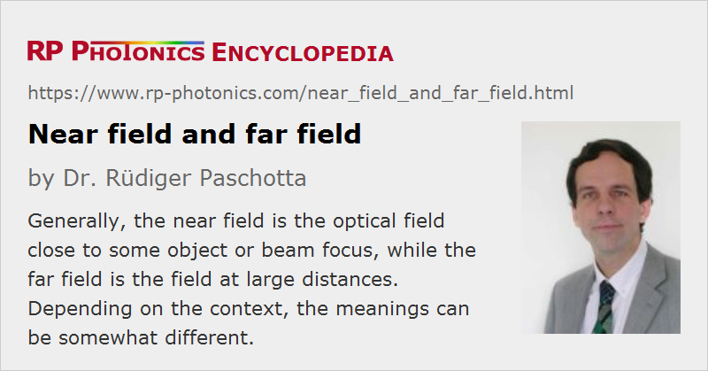

Near Field and Far Field
Definition: the optical field either close to a source or object or far from it
German: Nahfeld und Fernfeld
Categories: general optics, physical foundations
How to cite the article; suggest additional literature
Author: Dr. Rüdiger Paschotta
The terms near field and far field have similar, but somewhat different meanings depending on the context. Various cases are discussed in the following sections. Normally, there is no precisely defined boundary for the near or far field.
Often, one uses certain approximations for calculations, which are fulfilled only in the near field or in the far field. The near or far field can then be defined based on how well those approximations are fulfilled.
There are quantities which are defined only in the near or far field, or based on the near or far field. For example, the divergence of a laser beam is based on its far field profile.
Radiating Dipole
An oscillating electric dipole (e.g. an antenna or an excited atom or ion) emits electromagnetic radiation. Here, the near field has an extension less than one wavelengths. The far field occurs for distances from the dipole which are much larger than the wavelength. Various mathematical expressions for the far field are substantially simpler than those for the complete radiation field.
This also applies to radiation from antennae. Here, it is also of interest that objects in the near field can have a direct back-action on the antenna, while more distant objects can receive radiation without affecting the antenna. The near field also contains rapidly decaying field components which are not observable at larger distances.
Note that the near field of an antenna can extend substantially beyond one wavelength if the antenna is large.
Diffraction at an Aperture
When light is diffracted at an optical aperture, there can be substantial differences between the shapes of resulting diffraction patterns, depending on the distance of observation. Here, the near field is defined is the range where the Fresnel number is much larger than unity, while the far field is characterized by Fresnel numbers well below unity.
Imaging
Imaging devices such as microscopes are generally limited in image resolution to the order of half the optical wavelength. This is only true for devices utilizing the optical far field, however. There are different types of optical near field microscopes which can achieve a resolution far below the wavelength. For example, there are instruments which can a sample with a tapered fiber tip, having an opening diameter far below 1 μm. Such a tip must be put very close to the sample so that it penetrates the near field.
Evanescent Fields
In various situations, one has evanescent fields, which by definition are confined to the close vicinity of some object. For example, such fields occur in the context of total internal reflection or for light scattering at tiny dielectric particles.
Laser Beams
For a laser beam (which is often a Gaussian beam), the near field is the area around the beam focus within less than one effective Rayleigh length. The far field is the region far from the focus, with a distance much larger than the Rayleigh length, where the beam radius increases about linearly with the distance from the focus.
Optical Fibers
The near field for light exiting an optical fiber is the area in which the field profile has not yet been substantially expanded. For a rough criterion, one can calculate the Rayleigh length based on the mode radius of the fundamental fiber mode. On the other hand, the far field is obtained in distances which are large compared with that Rayleigh length; there, the shape of the beam profile is essentially determined by the 2D Fourier transform of the near-field profile.
Questions and Comments from Users
Here you can submit questions and comments. As far as they get accepted by the author, they will appear above this paragraph together with the author’s answer. The author will decide on acceptance based on certain criteria. Essentially, the issue must be of sufficiently broad interest.
Please do not enter personal data here; we would otherwise delete it soon. (See also our privacy declaration.) If you wish to receive personal feedback or consultancy from the author, please contact him e.g. via e-mail.
By submitting the information, you give your consent to the potential publication of your inputs on our website according to our rules. (If you later retract your consent, we will delete those inputs.) As your inputs are first reviewed by the author, they may be published with some delay.
See also: diffraction, imaging, Fourier optics
and other articles in the categories general optics, physical foundations
|  |
If you like this page, please share the link with your friends and colleagues, e.g. via social media:
These sharing buttons are implemented in a privacy-friendly way!